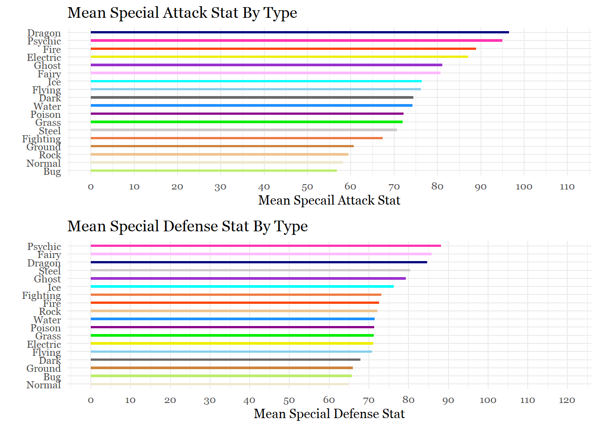
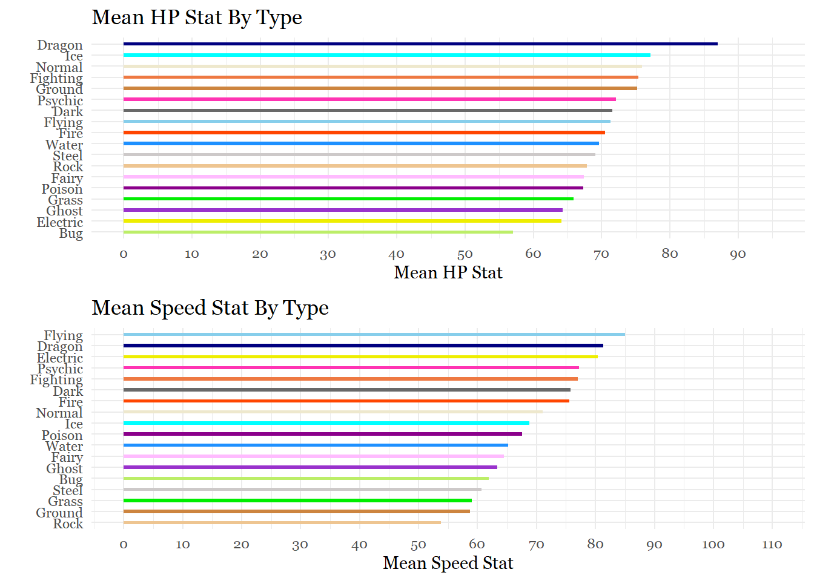

Task 4: Based on total stat average, what is the strongest and weakest type?
Alright, so at this stage we are probably at one of the most challenging tasks yet because we have Pokemon that count for more than one type, AGAIN.
Option 1: Try to think of a complicated conditional statement using dplyr that:
takes the average total_points of the 18 types in the type_1 column.
then takes of Pokemon with a second type so that their total_points can be averaged with the total_points of the first type.
Option 2:
Create a data frame with each Pokemon being counted twice for the first and second type like in task 1.
Next, eliminate all of the blanks and change the variable to “type.”
Then, I can take the mean total_points of each of the categories from that new, curated data frame.
Let’s try option 2:
#Create and prepare seperate dataframes for appending
firsttype_points<- data.frame(pokemon_data_clean[,c(5,9)])
secondtype_points<- data.frame(pokemon_data_clean[,c(6,9)])
names(firsttype_points)[names(firsttype_points) == "type_1"]<- "type"
names(secondtype_points)[names(secondtype_points) == "type_2"]<- "type"
#Combine dataframes and get rid of blanks
types_totalstat_avg<- rbind(firsttype_points, secondtype_points)
types_totalstat_avg<- data.frame(types_totalstat_avg[types_totalstat_avg$type != "",])
#Check Progress
table(types_totalstat_avg$type)##
## Bug Dark Dragon Electric Fairy Fighting Fire Flying
## 90 70 72 72 63 70 82 117
## Ghost Grass Ground Ice Normal Poison Psychic Rock
## 66 117 80 55 126 77 114 75
## Steel Water
## 71 153#Get means for 18 categories
mean_type_points<- types_totalstat_avg %>%
select(type, total_points) %>%
group_by(type) %>%
summarize(mean_total_points= mean(total_points))
mean_type_points## # A tibble: 18 x 2
## type mean_total_points
## <chr> <dbl>
## 1 Bug 384.
## 2 Dark 448.
## 3 Dragon 539.
## 4 Electric 448.
## 5 Fairy 441.
## 6 Fighting 477.
## 7 Fire 462.
## 8 Flying 452.
## 9 Ghost 449.
## 10 Grass 417.
## 11 Ground 440.
## 12 Ice 458
## 13 Normal 405.
## 14 Poison 418.
## 15 Psychic 483.
## 16 Rock 447.
## 17 Steel 490.
## 18 Water 430.Okay! That worked out really well, so now we are ready to visualize the strongest to weakest type. I’ll be using a Cleveland Dot Chart this time because there are 18 categories.
ggplot(mean_type_points,
aes(x = mean_total_points,
y = reorder(type, mean_total_points),
color = type))+
geom_point(size = 4)+
geom_segment(aes(x= 380,
xend = mean_total_points- 1.5,
y = reorder(type, mean_total_points),
yend = reorder(type, mean_total_points)),
color = "black") +
scale_color_manual(values = c("darkolivegreen2", "dimgray", "navyblue","yellow2","plum1",
"sienna2", "orangered", "skyblue", "darkorchid", "green2",
"tan3", "cyan", "cornsilk2", "darkmagenta", "maroon1", "burlywood2",
"snow3", "dodgerblue"))+
scale_x_continuous(breaks = seq(380,545,20),
limits = c(380, 545))+
labs (title = "Mean Stat Totals By Type",
x = "Mean Stat Totals",
y = "")+
geom_text(aes(label = round(mean_total_points, 0), family = "Georgia",
size = 10, hjust = -0.25))+
theme_minimal()+
theme(legend.position = "none",
text = element_text(family = "Georgia"),
plot.title = element_text(size = 15, margin(b = 10), family = "Georgia"),
panel.grid.minor = element_blank(),
panel.grid.major.x = element_blank()) Although some of the trends are obvious, seeing how they compare from a gamer’s perspective is interesting. Dragon Pokemon being, on average, the strongest makes sense because there are so many legendary Pokemon (which have the highest stats) that are dragons. Surprisingly, there is a 49 average point difference despite all the other type averages being relatively close to each other. I also had no idea ice Pokemon were so strong on average.
Task 5: Which types have the most of each stat?
For this task, what we will do is repeat all of the steps from the previous task. The only difference this time is that we will be doing this for the 6 stats the compose the total points.
# HP
firsttype_hp<- data.frame(pokemon_data_clean[,c(5,10)])
secondtype_hp<- data.frame(pokemon_data_clean[,c(6,10)])
names(firsttype_hp)[names(firsttype_hp) == "type_1"]<- "type"
names(secondtype_hp)[names(secondtype_hp) == "type_2"]<- "type"
types_hpstat_avg<- rbind(firsttype_hp, secondtype_hp)
types_hpstat_avg<- data.frame(types_hpstat_avg[types_hpstat_avg$type != "",])
mean_type_hp<- types_hpstat_avg %>%
select(type, hp) %>%
group_by(type) %>%
summarize(mean_hp_points= mean(hp))
# Attack
firsttype_att<- data.frame(pokemon_data_clean[,c(5,11)])
secondtype_att<- data.frame(pokemon_data_clean[,c(6,11)])
names(firsttype_att)[names(firsttype_att) == "type_1"]<- "type"
names(secondtype_att)[names(secondtype_att) == "type_2"]<- "type"
types_attstat_avg<- rbind(firsttype_att, secondtype_att)
types_attstat_avg<- data.frame(types_attstat_avg[types_attstat_avg$type != "",])
mean_type_att<- types_attstat_avg %>%
select(type, attack) %>%
group_by(type) %>%
summarize(mean_att_points= mean(attack))
# Defense
firsttype_def<- data.frame(pokemon_data_clean[,c(5,12)])
secondtype_def<- data.frame(pokemon_data_clean[,c(6,12)])
names(firsttype_def)[names(firsttype_def) == "type_1"]<- "type"
names(secondtype_def)[names(secondtype_def) == "type_2"]<- "type"
types_defstat_avg<- rbind(firsttype_def, secondtype_def)
types_defstat_avg<- data.frame(types_defstat_avg[types_defstat_avg$type != "",])
mean_type_def<- types_defstat_avg %>%
select(type, defense) %>%
group_by(type) %>%
summarize(mean_def_points= mean(defense))
# Special Attack
firsttype_sp.att<- data.frame(pokemon_data_clean[,c(5,13)])
secondtype_sp.att<- data.frame(pokemon_data_clean[,c(6,13)])
names(firsttype_sp.att)[names(firsttype_sp.att) == "type_1"]<- "type"
names(secondtype_sp.att)[names(secondtype_sp.att) == "type_2"]<- "type"
types_sp.attstat_avg<- rbind(firsttype_sp.att, secondtype_sp.att)
types_sp.attstat_avg<- data.frame(types_sp.attstat_avg[types_sp.attstat_avg$type != "",])
mean_type_sp.att<- types_sp.attstat_avg %>%
select(type, sp_attack) %>%
group_by(type) %>%
summarize(mean_sp.att_points= mean(sp_attack))
# Special Defense
firsttype_sp.def<- data.frame(pokemon_data_clean[,c(5,14)])
secondtype_sp.def<- data.frame(pokemon_data_clean[,c(6,14)])
names(firsttype_sp.def)[names(firsttype_sp.def) == "type_1"]<- "type"
names(secondtype_sp.def)[names(secondtype_sp.def) == "type_2"]<- "type"
types_sp.defstat_avg<- rbind(firsttype_sp.def, secondtype_sp.def)
types_sp.defstat_avg<- data.frame(types_sp.defstat_avg[types_sp.defstat_avg$type != "",])
mean_type_sp.def<- types_sp.defstat_avg %>%
select(type, sp_defense) %>%
group_by(type) %>%
summarize(mean_sp.def_points= mean(sp_defense))
# Speed
firsttype_speed<- data.frame(pokemon_data_clean[,c(5,15)])
secondtype_speed<- data.frame(pokemon_data_clean[,c(6,15)])
names(firsttype_speed)[names(firsttype_speed) == "type_1"]<- "type"
names(secondtype_speed)[names(secondtype_speed) == "type_2"]<- "type"
types_speedstat_avg<- rbind(firsttype_speed, secondtype_speed)
types_speedstat_avg<- data.frame(types_speedstat_avg[types_speedstat_avg$type != "",])
mean_type_speed<- types_speedstat_avg %>%
select(type, speed) %>%
group_by(type) %>%
summarize(mean_speed_points= mean(speed))Let’s make the plots for each stat!
#Hp
h<-ggplot(mean_type_hp,
aes(x= reorder(type, mean_hp_points),
y= mean_hp_points , fill = type))+
geom_bar(stat = "identity", width = .30, alpha = 1) +
scale_y_continuous(breaks = seq(0,95,10),
limits = c(0, 95))+
labs(x= "", y= "Mean HP Stat", title ="Mean HP Stat By Type")+
scale_fill_manual(values = c("darkolivegreen2", "dimgray", "navyblue","yellow2","plum1",
"sienna2", "orangered", "skyblue", "darkorchid", "green2",
"tan3", "cyan", "cornsilk2", "darkmagenta", "maroon1", "burlywood2",
"snow3", "dodgerblue"))+
theme_minimal()+
theme(legend.position = "none",
text = element_text(family = "Georgia"))+
coord_flip()
#Attack
a<-ggplot(mean_type_att,
aes(x= reorder(type, mean_att_points),
y= mean_att_points , fill = type))+
geom_bar(stat = "identity", width = .30, alpha = 1) +
scale_y_continuous(breaks = seq(0,110,10),
limits = c(0, 110))+
labs(x= "", y= "Mean Attack Stat", title ="Mean Attack Stat By Type")+
scale_fill_manual(values = c("darkolivegreen2", "dimgray", "navyblue","yellow2","plum1",
"sienna2", "orangered", "skyblue", "darkorchid", "green2",
"tan3", "cyan", "cornsilk2", "darkmagenta", "maroon1", "burlywood2",
"snow3", "dodgerblue"))+
theme_minimal()+
theme(legend.position = "none",
text = element_text(family = "Georgia"))+
coord_flip()
#Defense
d<-ggplot(mean_type_def,
aes(x= reorder(type, mean_def_points),
y= mean_def_points , fill = type))+
geom_bar(stat = "identity", width = .30, alpha = 1) +
scale_y_continuous(breaks = seq(0,120,10),
limits = c(0, 120))+
labs(x= "", y= "Mean Defense Stat", title ="Mean Defense Stat By Type")+
scale_fill_manual(values = c("darkolivegreen2", "dimgray", "navyblue","yellow2","plum1",
"sienna2", "orangered", "skyblue", "darkorchid", "green2",
"tan3", "cyan", "cornsilk2", "darkmagenta", "maroon1", "burlywood2",
"snow3", "dodgerblue"))+
theme_minimal()+
theme(legend.position = "none",
text = element_text(family = "Georgia"))+
coord_flip()
#Special Attack
spa<-ggplot(mean_type_sp.att,
aes(x= reorder(type, mean_sp.att_points),
y= mean_sp.att_points , fill = type))+
geom_bar(stat = "identity", width = .30, alpha = 1) +
scale_y_continuous(breaks = seq(0,110,10),
limits = c(0, 110))+
labs(x= "", y= "Mean Specail Attack Stat", title ="Mean Special Attack Stat By Type")+
scale_fill_manual(values = c("darkolivegreen2", "dimgray", "navyblue","yellow2","plum1",
"sienna2", "orangered", "skyblue", "darkorchid", "green2",
"tan3", "cyan", "cornsilk2", "darkmagenta", "maroon1", "burlywood2",
"snow3", "dodgerblue"))+
theme_minimal()+
theme(legend.position = "none",
text = element_text(family = "Georgia"))+
coord_flip()
#Special Defense
spd<-ggplot(mean_type_sp.def,
aes(x= reorder(type, mean_sp.def_points),
y= mean_sp.def_points , fill = type))+
geom_bar(stat = "identity", width = .30, alpha = 1) +
scale_y_continuous(breaks = seq(0,120,10),
limits = c(0, 120))+
labs(x= "", y= "Mean Special Defense Stat", title ="Mean Special Defense Stat By Type")+
scale_fill_manual(values = c("darkolivegreen2", "dimgray", "navyblue","yellow2","plum1",
"sienna2", "orangered", "skyblue", "darkorchid", "green2",
"tan3", "cyan", "cornsilk2", "darkmagenta", "maroon1", "burlywood2",
"snow3", "dodgerblue"))+
theme_minimal()+
theme(legend.position = "none",
text = element_text(family = "Georgia"))+
coord_flip()
#Speed
spe<-ggplot(mean_type_speed,
aes(x= reorder(type, mean_speed_points),
y= mean_speed_points , fill = type))+
geom_bar(stat = "identity", width = .30, alpha = 1) +
scale_y_continuous(breaks = seq(0,110,10),
limits = c(0, 110))+
labs(x= "", y= "Mean Speed Stat", title ="Mean Speed Stat By Type")+
scale_fill_manual(values = c("darkolivegreen2", "dimgray", "navyblue","yellow2","plum1",
"sienna2", "orangered", "skyblue", "darkorchid", "green2",
"tan3", "cyan", "cornsilk2", "darkmagenta", "maroon1", "burlywood2",
"snow3", "dodgerblue"))+
theme_minimal()+
theme(legend.position = "none",
text = element_text(family = "Georgia"))+
coord_flip()
#Let's pair the graphs up to save room
library(gridExtra)
grid.arrange(a,d)grid.arrange(spa,spd)
grid.arrange(h,spe)
Task 6: Are some generations on average stronger than others?
To complete this task we are going to need summary stats for each generation.
pokemon_by_generations <- pokemon_data_clean %>%
select(generation, total_points) %>%
group_by(generation) %>%
summarize(n = n(),
mean_total = mean(total_points),
sd= sd(total_points),
se = sd / sqrt(n),
ci = qt(0.975, df = n - 1) * sd / sqrt(n))
pokemon_by_generations## # A tibble: 8 x 6
## generation n mean_total sd se ci
## <int> <int> <dbl> <dbl> <dbl> <dbl>
## 1 1 192 424. 112. 8.12 16.0
## 2 2 107 419. 120. 11.6 22.9
## 3 3 165 436. 135. 10.5 20.8
## 4 4 121 459. 120. 10.9 21.5
## 5 5 171 435. 108. 8.23 16.2
## 6 6 85 443. 119. 12.9 25.6
## 7 7 99 459. 123. 12.4 24.6
## 8 8 88 438. 142. 15.1 30.0Although there does not appear to be a general pattern that affects the summary statistics of the generations, Gamefreak does appear to be making less Pokemon than previous years. This makes sense because starting from generation 6, they began introducing alternate forms and evolutions for the older generations to accompany the new Pokemon. Although generation 1 only had 151 Pokemon to begin with, new evolutions and alternate forms introduced in later generations brought it to 192 Pokemon.
To visualize this we are going to use an SEM Plot:
#Recharacterize generation
pokemon_by_generations$generation<- as.character(pokemon_by_generations$generation)
#SEM Plot
ggplot(pokemon_by_generations,
aes(x = factor(generation, labels = c("Gen 1","Gen 2","Gen 3","Gen 4", "Gen 5", "Gen 6", "Gen 7", "Gen 8")),
y = mean_total,
group = 1))+
geom_point(size = 4, color = "orangered") +
geom_line(size = 1, color ="orangered") +
geom_errorbar(aes(ymin = mean_total- se,
ymax = mean_total + se),
width = .1,
size = 0.5,
color ="orangered") +
scale_y_continuous(breaks = seq(400,480,20),
limits = c(400, 480))+
labs(title = "Mean Stat Total by Generation",
subtitle = "This figure shows the mean stat total ± the standard error for each generation.",
x = "",
y = "")+
theme_minimal() +
theme(legend.position = "none",
text = element_text(family = "Georgia"),
plot.title = element_text(size = 20, margin(b = 10), hjust = 0.5, family = "Georgia"),
plot.subtitle = element_text(size = 10, color = "darkslategrey", margin = margin(b =10), hjust = 0.5))## Warning: Vectorized input to `element_text()` is not officially supported.
## Results may be unexpected or may change in future versions of ggplot2.
Task 7: Do newer generations have more variation in their total stat distributions?
The previous task showed that the last 3 generations have relatively more variation in their total stat distributions, partially because they have fewer Pokemon.
With so many ways to visualize a categorical variable against a quantitative variable, I will showcase two ways to visualize the variation in their distributions:
Beeswarm Plot
Ridgeline plot
#Beeswarm Plot
library(ggbeeswarm)
library(scales)
pokemon_data_clean$generation<- as.character(pokemon_data_clean$generation)
ggplot(pokemon_data_clean,
aes(x = factor(generation, labels = c("Gen 1","Gen 2","Gen 3","Gen 4",
"Gen 5", "Gen 6", "Gen 7", "Gen 8")),
y = total_points,
color = generation)) +
geom_quasirandom(alpha = 0.4,
size = 1.5) +
scale_y_continuous(breaks = seq(150,1150,200),
limits = c(150, 1150)) +
labs(title = "Distributions of Total Stats by Generation",
x = "",
y = "") +
theme_minimal() +
theme(legend.position = "none",
text = element_text(family = "Georgia"),
plot.title = element_text(size = 15, margin(b = 10), hjust = 0.5, family = "Georgia"),
plot.subtitle = element_text(size = 10, color = "darkslategrey", margin = margin(b =10), hjust = 0.5))
# Ridgeline Plot
library(ggridges)
ggplot(pokemon_data_clean,
aes(x = total_points,
y = generation,
fill = generation))+
labs(title = "Distributions of Total Stats by Generation",
x = "Total Points",
y= "Generation")+
geom_density_ridges() +
theme_ridges() +
geom_density_ridges(alpha = 0.5)+
labs("Distribution of Pokemon by Generation") +
theme(legend.position = "none",
text = element_text(family = "Georgia"),
plot.title = element_text(size = 15, margin(b = 10), hjust = 0.5, family = "Georgia"),
plot.subtitle = element_text(size = 10, color = "darkslategrey", margin = margin(b =10), hjust = 0.5))Task 8: Which stats have the most and least variation?
For this task, I will take the summary statistics of each stat, create a data frame for each of them, and append them after changing their names.
#Summary Stats
hp_stat<- pokemon_data_clean %>%
select(hp) %>%
summarize(n = n(),
mean_stat = mean(hp),
sd= sd(hp),
se = sd / sqrt(n),
ci = qt(0.975, df = n - 1) * sd / sqrt(n))
attack_stat<- pokemon_data_clean %>%
select(attack) %>%
summarize(n = n(),
mean_stat = mean(attack),
sd= sd(attack),
se = sd / sqrt(n),
ci = qt(0.975, df = n - 1) * sd / sqrt(n))
defense_stat<- pokemon_data_clean %>%
select(defense) %>%
summarize(n = n(),
mean_stat = mean(defense),
sd= sd(defense),
se = sd / sqrt(n),
ci = qt(0.975, df = n - 1) * sd / sqrt(n))
sp.attack_stat<- pokemon_data_clean %>%
select(sp_attack) %>%
summarize(n = n(),
mean_stat = mean(sp_attack),
sd= sd(sp_attack),
se = sd / sqrt(n),
ci = qt(0.975, df = n - 1) * sd / sqrt(n))
sp.defense_stat<- pokemon_data_clean %>%
select(sp_defense) %>%
summarize(n = n(),
mean_stat = mean(sp_defense),
sd= sd(sp_defense),
se = sd / sqrt(n),
ci = qt(0.975, df = n - 1) * sd / sqrt(n))
speed_stat<- pokemon_data_clean %>%
select(speed) %>%
summarize(n = n(),
mean_stat = mean(speed),
sd= sd(speed),
se = sd / sqrt(n),
ci = qt(0.975, df = n - 1) * sd / sqrt(n))
#Appending
stat_comparison<- rbind(hp_stat, attack_stat, defense_stat, sp.attack_stat, sp.defense_stat,speed_stat)
name<- c("HP", "Attack", "Defense", "Special Attack", "Special Defense", "Speed")
name<-data.frame(name)
stat_comparison<-cbind(name,stat_comparison)
stat_comparison## name n mean_stat sd se ci
## 1 HP 1028 69.57782 26.38585 0.8229520 1.614859
## 2 Attack 1028 80.11965 32.37232 1.0096650 1.981242
## 3 Defense 1028 74.47568 31.30331 0.9763234 1.915817
## 4 Special Attack 1028 72.73249 32.67770 1.0191894 1.999931
## 5 Special Defense 1028 72.13230 28.08368 0.8759060 1.718770
## 6 Speed 1028 68.53405 29.80210 0.9295021 1.823940Interestingly, the offensive stats (Attack and Special Attack) appear to be the most varied. This seems to suggest that when the game creators are choosing stat values for new Pokemon, they have a tendency to exagerate offensive capabilities more so than defensive ones. Why might that be? I don’t really know. The only thing I could think of is that offense is more exciting then defense or speed.
#SEM Plot
ggplot(stat_comparison,
aes(x = reorder(name, mean_stat),
y = mean_stat,
group = 1)) +
geom_point(size = 4, color = "cornflowerblue") +
geom_line(size = 1, color ="cornflowerblue") +
geom_errorbar(aes(ymin = mean_stat- se,
ymax = mean_stat + se),
width = .1,
size = 1,
color ="cornflowerblue") +
scale_y_continuous(breaks = seq(60,85, 5),
limits = c(60, 85))+
labs(title = "Stat Comparison",
subtitle = "(mean +/- standard error)",
x = "",
y = "")+
theme_minimal() +
theme(legend.position = "none",
text = element_text(family = "Georgia"),
plot.title = element_text(size = 15, margin(b = 10), hjust = 0.5, family = "Georgia"),
plot.subtitle = element_text(size = 10, color = "darkslategrey", margin = margin(b =10), hjust = 0.5))Although the offensive stats appear to be the most varied, the variation between the stats is actually very similar. I think, more than anything else, this graph really highlights the large difference between the average attack stat and all the others.